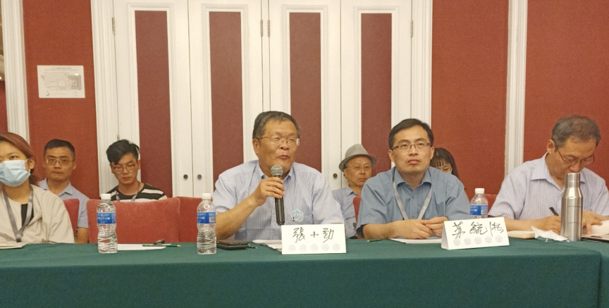
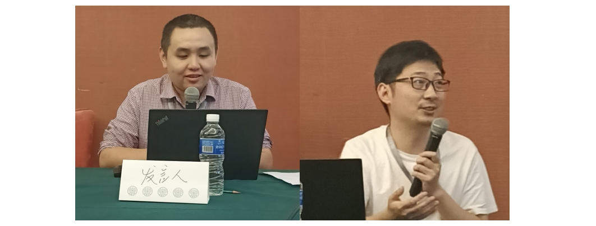

会议侧记丨大变革时代的比较政治学研究：理论、方法和前沿议题圆满召开
收录于合集 #会议速递 20个
2021年7月，清华大学主办的第十四届政治学与国际关系学术共同体年会在北京辽宁大厦隆重召开。7月5日，由清华大学政治学系主办的“大变革时代的比较政治学研究：理论、方法与前沿议题”分论坛在阜新厅K举办，来自清华大学、北京大学、中国人民大学、浙江大学、上海交通大学、南开大学和厦门大学等国内外知名学府的学者们集聚一堂，从不同方面对比较政治的相关议题展开了深入的讨论。本次研讨会还吸引了相关专家学者、广大学子以及业界人士60余人到现场旁听。
开幕式由本次研讨会的发起人、清华大学政治学系教授苏毓淞主持，清华大学政治学系教授、系主任张小劲致辞。作为国内比较政治学的领军人物之一，张小劲教授在讲话中表示，正是由于广大学人的不懈努力，比较政治学才能永葆青春活力，如今渐渐成为学科的前沿方向。他对相关专家学者的到会参与表示由衷的感谢，并殷切希望广大学人能够不断深入对相关议题的研究，力争能够有所学理创新和学科贡献。紧接着，苏毓淞教授进行了发言。他简单地介绍了本次研讨会召开的缘由，其实在今年5月份，清华大学政治学系举办了“政治学经典议题与实证前沿”学术研讨会，不过由于疫情等客观原因，很多讨论未能尽兴。而本次的比较政治学研讨会可以说是一个半月前会议的延续。他认为这次研讨会的主题仍然定位在政治学经典议题上，定位在比较政治学的初衷—— “比较”的主题上。同时，苏毓淞教授对广大专家学者的到会讨论表示感谢，并由衷地希望大家可以积极提问，莫让学术讨论成为“走过场”。之后，正式开始了本次论坛的第一个单元。

一、 第一单元
首先，来自南开大学周恩来政府管理学院的李春福副教授和学生肖伟林汇报了题为《解析民主崩溃的话语体系：从民主解固到民主失效》的研究。该研究首先回顾了规范与经验上的民主概念以及民主化研究的历史过程。然后基于民主崩溃的定义引入了“民主解固”这个问题，通过对于转型范式的统计结果研究，他们发现在第三波民主化转型的过程中逐渐发生了政治现代化等同于西方化、政治转型等同于民主转型的结果。此外，他们还分析了民主崩溃的三重话语，强调巩固民主的进程也并未一劳永逸。
接着，来自厦门大学公共事务学院的王伟光副教授分享了题为《宗教宽容与恐怖主义——来自WVS和GTD数据经验性分析》的研究。他的研究指出既有的定量研究存在若干不足。通过实证分析，其发现，宗教宽容与一国恐怖袭击状况之间表面所呈现出来的相关性，可能在很大程度上是教派影响的结果。此外，教派与一国的宗教宽容和恐怖主义状况存在比较显著的关系。一般而言，穆斯林比例越高，一国的宗教宽容越低，恐怖主义威胁更严重。而基督徒比例则显示相反的关系，虽然这种关系的统计显著性要相对低许多。不过，对得出伊斯兰滋生或导致恐怖主义等的推论仍需要特别谨慎对待。最后，他也指出了自己研究的不足，他认为研究中显示出的穆斯林比例与恐怖主义间的关系，也有可能如宗教宽容与恐怖主义间的关系一样，不能排除其他变量导致的虚假关系。另外，本次研究只集中于观念层次；而没有考察如经济、政治、社会等其他显然对恐怖主义的发生也有重要影响的客观变量。
然后，来自中国人民大学国际关系学院的韩冬临教授汇报了题为《中欧民众美好生活感知比较研究》的研究。韩冬临强调，如今安全感幸福感已经成为社科领域的主要关注方向，在中国这两个词语已经随着时代的发展为“美好生活”，成为独有的“中国词语”。作为世界上同样具有较高幸福水平的中国和欧洲地区，中欧既有外在差异，也有内在差异。其研究应用幸福感、安全感、获得感作为第一维度，每一维度又分为三个不同的指标，借鉴第七次世界价值观调查（World Value Survey 7）的数据，制作标准差和标准化因子负荷量，发现了各国民众的美好生活感知总体处于较高水平（尤其是德国、安道尔和中国），他还发现国别差异显著存在。当然，韩老师认为其研究的资料来源非常有限，指标的设立还不够完善，只有五个欧洲国家，个体层面的数据也无法对国别差异（即国家层面）有所准确解释。
在第一单元的三篇研究汇报完毕后，来自上海交通大学公共事务学院的魏英杰副教授和即将入职北京大学社会研究中心（光华管理学院）的杨锋博士分别对三篇研究进行了评议。首先由魏英杰点评，其认为“民主解固”这篇研究在实证证据方面还有待充实；建议研究者进一步厘清民主解固和侵蚀的关系、梳理案例与情境的对应性，建议可按照美欧、第三波民主国家分析，选择两到三个案例进行分析，进一步增强研究的说服力。他认为第二篇关于宗教与恐怖袭击的研究的论点很好，是理念对政治行为影响的研究。他建议在研究中变量间关系应该说明Religious和secular terrorism的区别、宗教宽容度的相关研究；恐怖袭击次数若能够进行区分（本国组织还是跨国恐怖组织）就会更加详细。他建议此研究可以加入机制性的讨论和案例、同时考虑内生性问题、并且加强政策的可操作化，例如如何塑造民众宗教观等。他认为第三篇研究的研究选题值得肯定，直击时代脉搏，同时呈现了较为优秀的跨国比较研究，非常难得，但是在中国安全感的分析上日后还需要多加解释。接下来是来自北京大学- 普林斯顿大学国际联合博士后（即将入职北京大学社会研究中心）杨锋老师对上述研究进行了评论。他认为第一篇研究关注的问题很好，选取的具体案例较为合适。借助数据库，通过三个不同过程研究民主崩溃的原因是否相同，在接下来的研究中应该多加数据和参数，以使得结果更加明确。他认为第二篇研究应该进一步研究非宗教国如何处理他国恐怖袭击，考虑单一教派国家的恐怖袭击数量是否会很少，并且对于研究进行0的处理，例如有的国家一直没有恐怖袭击，这也是确实存在的现象。他认为第三篇研究应该对具体选择的数据做出解释，并且增加探讨机制，例如GDP 的影响等。相关研究者对评论人的意见和建议进行了回应，此外现场听众踊跃提问，与发言嘉宾展开了深入的讨论。
二、第二单元

第二单元的汇报由中国人民大学国际关系学院的韩冬临教授主持。
首先，浙江大学的百人计划研究员邵立和厦门大学经济学院助理教授张希睿分享了题为“Public Acceptance of Immigrants Assimilation in a Culturally Distant Context: The Case of China”的研究。他们的研究认为国际移民越来越成为一件平常的事。依据Kim在1999年提出的“异乡人的亚裔群体”理论引发了研究问题：长文化距离可能会让同化主义效果消失，公众是否能接受长文化距离的移民主动融入。利用调查实验的方法，他们的研究表明在长文化距离的语境之下，中国公众依然会支持“主动同化”的海外移民。公众支持的动力主要来源于减少移民对本国文化与民族认同的威胁的焦虑。公众支持也部分基于经济（工具主义）的考虑。同时他们的研究还建议，国家在制定移民、留学生政策时，应该考虑加入鼓励同化的相关措施和服务，比如鼓励外国居民学习中文等。同时我们也应该继续探讨公众对同化的态度是否会受移民国籍、种族和性别等因素的影响等问题。
接着，来自清华大学公共管理学院的水木学者、博士后江汉臣分享了其与斯坦福大学博士生卢樱丹、清华大学公共管理学院副教授唐啸合作的《借鉴发达国家经验能够提高公众政策支持吗— 基于调研实验法的实证研究》一文。在国情社情世情发生重大变化，公共政策问题日趋复杂，决策过程日趋科学化的今天，“借鉴发达国家经验”是否仍然能够促进公众支持？他们采用“房产税”作为政策情景，基于网络调研实验数据进行了研究，结果发现，借鉴发达国家的政策经验并不会显著影响公众对房产税政策的支持度；对年轻人和低收入水平的受访者而言，发达国家政策参考显著降低了他们对于房产税政策的支持度；发达国家政策信息显著降低了公众对房产税适合中国国情的判断。
最后，来自清华大学政治学系的胡悦副教授分享了《语言政策场域与政治参与意识：中国英语教育政策下的民众政治效能研究》一文。胡老师首先提出了一个问题：从长远看，英语掌握是否能改变公民对国家和政府关系、政治理念的认知。他认为语言可以从信息、价值体系、自我认同、优势提升四个维度影响人对政府、政治认知的理解。基于CGSS2010的数据实证分析了语言是否会对内部效能感产生作用，同时判断四个机制在多大程度上能起作用。研究表明，英语水平对内部效能感和外部效能感都有一个总体积极作用，对于内部效能感和内部效能感语言的影响路径是不一样的。
在三位研究者汇报完毕后来自清华大学公共管理学院的副教授陈济冬以及北京大学的杨锋博士分别对三位研究者的汇报进行了点评。陈济冬首先评议，他认为这三篇都是研究“public opinion”的文章。第一篇是研究“中国人如何看待外国人，第二篇是研究中国人怎样看待外国政策，第三篇关注中国人用什么样的方法研究外国的信息。每篇研究都能对于中国当下的政治制度有很多启示。第一篇的题目在国外是一个很有热度的话题，但是他认为之前已有的文献没有梳理出他们发现结论的机理，这篇文献提出了中国对于西方人看法的理论机理。他建议可以探讨一下和文献得到不同结果的原因，包括中美对于此实验产生不同反应的内在机理。同时这个研究对于现实问题有何启示，他举了近期的留学生问题作为引子，希望研究人员进一步思考。第二篇的题目看似公共管理，但实际上是政治制度的问题。他介绍了两篇相关的论文供研究者参考，并表示这篇文章从政策层面的国家信息来分析民众的政策支持度，这在一定程度上支持了“制度自信”的假设基础，但是若想进一步阐释可能要进一步改变实验中的政策叙事方法，尽量让受试者（老百姓）明白政府的政策是经过深思熟虑的。第三篇研究证明了了语言是获取信息的能力。若这个文献的理论行之有效，那么就可以辅佐政策制定者认识到这一举措可以导致社会观念的分化，甚至是一种极度分化。同时学习英语的能力也需要考虑到内生性问题这一点。因为自信和不自信的人会对于自身的英语水平产生误判，他建议问卷中可以增加一些度量受试人自信程度的选项。接下来，杨锋博士对相关研究进行点评。他认为这三篇具有很强的政策含义。对第一篇，他建议作者还应考虑许多生活在中国的非洲人士，而不能仅仅考虑中国对于来自英美外国人的主观感受。对第二篇研究，他认为江博士选取德国和美国作为发达国家欠妥，也许可以将美德二国归为一类。同时他认为应该深入讨论“发达国家”的作用点，例如是民主制度还是经济等。他认为第三篇研究有非常多的文献综述，非常有价值。但是他担心每个受试者学习能力的问题，也就是内生性的问题，他建议可以找出一种变量，其是可以使得受试者获得自生激励的原因。
接下来的开放提问环节，与会者对三位汇报人的研究提出了很有颇有价值的问题，汇报人对评论和疑问一一进行了回应。
三、闭幕环节
在第二单元的研讨会环节，清华大学文科资深教授阎学通老师也到达了会场，他旁听了第二单元三位老师的发言，并在主持人的盛情邀请下对他们的发言做出了评价。阎学通首先认为上述几个设计普遍在操作化方面下的功夫多，但是在研究设计方面——关注的问题并无太多亮点。他没能发现方法论的新颖和研究方向的前沿性，大家没有考虑寻找问题的三要素。大部分研究没有从问题来源的角度深入，没有从实验的现实意义上进行考虑，反而将目光放在了政策意义上。他认为各位老师作为教育工作者，应尽量少地关注政策，而应去多寻找探索理论，进行知识贡献。除此之外，寻找问题要符合问题的三要素，若不符合则无意义。他建议，借鉴外国经验应该改为借鉴“先进国家”，抑或是“比中国先进的国家”的经验。对最后一篇研究他还指出，中国人对外国语言的印象是一个较古老研究，在新中国成立时就已经成为了热门，在80年代就得出了结论。实际上中国的语言代表了宗族文化的社会地位，语言发音代表了地位、关系远近，宗族文化决定了中文可以成为判断关系远近的标准，而英语是是没有这一效果的。在欧美文化划分地位的基础某种程度上是肤色和种族，语言的作用较少。最后，阎学通老师呼吁广大学人应该增加对于研究设计的投入，对于基层理论的投入。
清华大学政治学系的苏毓淞教授对本次研讨会进行了最后总结。他高度赞扬了阎学通教授对相关研究所提出的批评和建议。并期待在明年的“政治学经典议题与实证前沿研讨会”以及共同体会议的比较政治模块上，学人们分享的成果在研究设计上能有所进步。作为本次论坛的发起人，他再次对广大学者的与会交流讨论、评论人慷慨而无私的奉献，以及广大学子的到会旁听表示感谢，期待大家明年再会！
注：感谢本次论坛的志愿者吕友彪、乔震邦以及冯庆庆等同学在会议记录和摄影上的贡献。
供稿：汤峰 编辑：郭静远